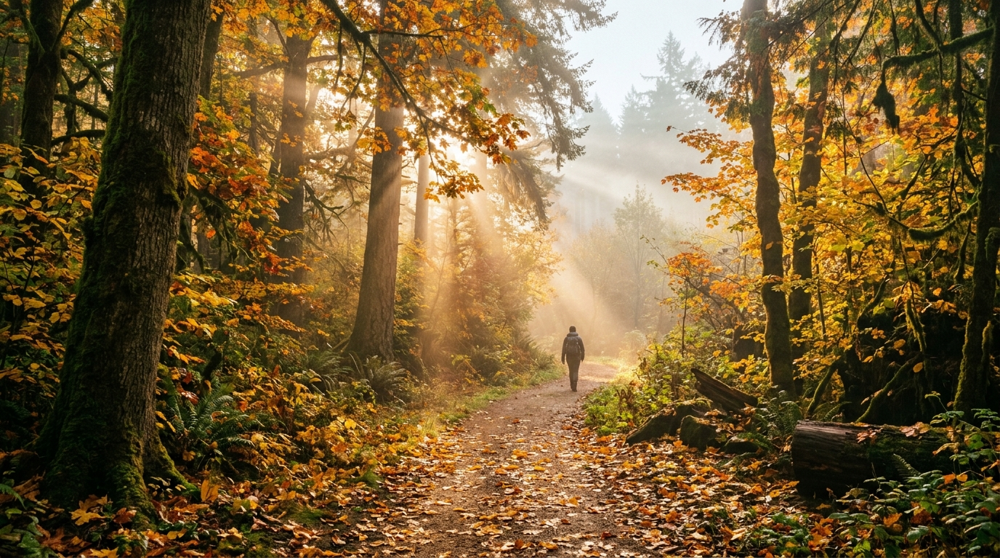
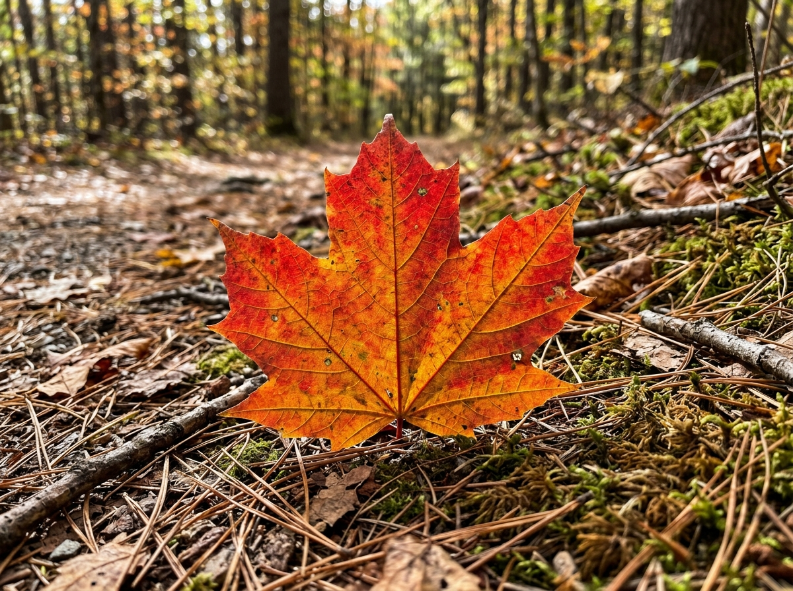
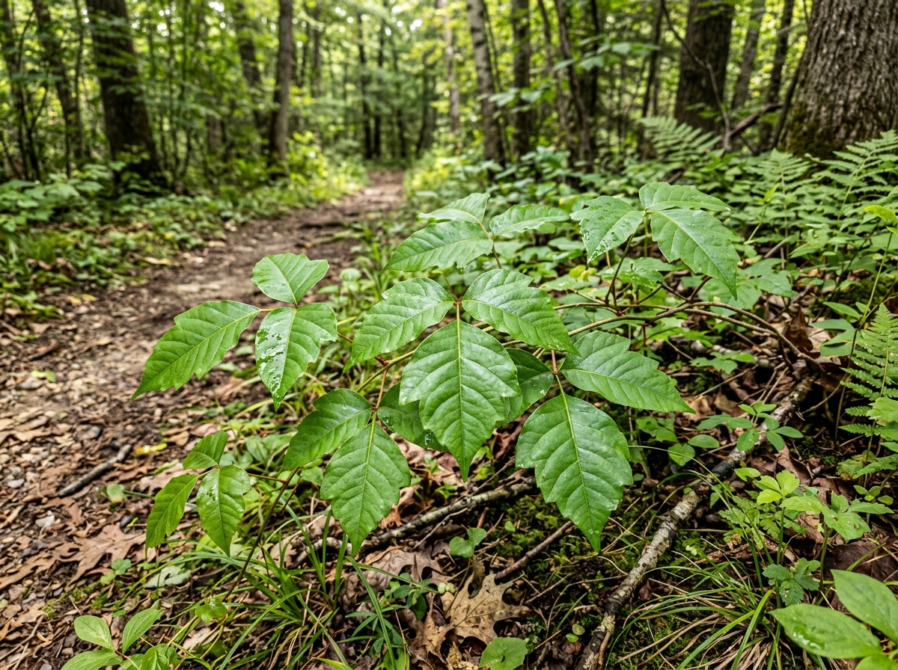
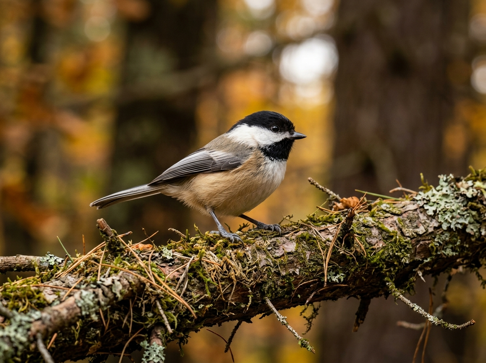

Open-Source AI Built for the Deep Woods
No cell tower? No problem. VerdantEcho runs open-weight bioacoustic neural models, autumn foliage vision, and frost almanacs directly inside your browser on-device. Zero cloud telemetry, zero subscription fees, zero tracking.
📡 Trail Acoustic Spectrum
AST Onnx / Web Worker🧬 Bioacoustic Identification
Inference: 14msBlack-capped Chickadee
Distinctive two-note pure whistle "fee-bee" followed by rapid raspy warning "chick-a-dee-dee". Common in deciduous and mixed woods. Highly curious and brave songbird.
📷 Trail Vision Scanner
On-Device Canvas Pipeline

⚠️ Poison Ivy
Chickadee🔬 Botanical & Safety Analysis
Local AI VisionSugar Maple (Peak Autumn Foliage)
Peak autumnal anthocyanin transformation. Five palmate lobes with U-shaped sinuses. Native to northeastern hardwood forests. Non-toxic, sap tapped for maple syrup in late winter.
❄️ October Frost & Microclimate Forecaster
USDA Zone 6b (Automated)Calculate first frost likelihood and ideal cold-hardy garden sowing windows based on offline latitude estimation.
🌱 What to Plant & Forage This Week:
| CROP / SPECIMEN | WINDOW | ACTION | FROST TOLERANCE | TRAIL / GARDEN NOTE |
|---|---|---|---|---|
| Hardneck Garlic | Oct 10 – Nov 15 | Sow Now | Sub-zero hardy | Plant cloves 2 inches deep, cover with 4 inches straw mulch. |
| Winter Rye Cover Crop | Oct 01 – Oct 25 | Broadcast Seed | Extreme hardiness | Prevents autumn erosion and locks nitrogen in soil. |
| Winter Spinach (Bloomsdale) | Late Autumn | Direct Sow | Hardy to 20°F | Overwinters under cold frames for early March harvest. |
| Winter Squash & Pumpkins | Immediate | Harvest Before Frost | Frost sensitive | Rind will soften if caught in hard freeze. Cure in dry warmth. |
| Wild Chanterelles / Hen of Woods | Early–Mid Oct | Forage on Oak Stumps | Moderate | Look at base of mature oak trees after autumn rain. |
📔 Trail Sightings Log
Stored locally in browser IndexedDB. Zero cloud leaks.🤖 Open-Weight Gemma 2B Naturalist Engine
Partner Category: Best Use of GemmaVerdantEcho leverages Google's open-weight Gemma 2B model as an on-device ecological field guide. Because Gemma is open-weight, it runs entirely on consumer hardware (laptops, edge devices, Raspberry Pi) without requiring an internet connection or transmitting sensitive GPS coordinates to cloud servers.
🌿 Gemma Naturalist Prompt Template:
<start_of_turn>user
You are VerdantEcho, an offline backcountry naturalist on an autumn trail.
The hiker just observed: Black-capped Chickadee (Poecile atricapillus)
Confidence: 96.4%
Elevation: 1,420 ft
Date: October 11, 2026
In 2 brief sentences, tell the hiker what behavioral cue to watch for right now, then encourage them to put their screen away.<end_of_turn>
<start_of_turn>model
Watch for chickadees hiding sunflower and conifer seeds under tree bark crevices—they cache up to 100,000 food items each fall! Now slip this device in your pack and listen for their companion nuthatches foraging nearby.<end_of_turn>
💻 Run Locally via Python CLI:
We have bundled gemma_field_scout.py in the repository. Run it offline:
python gemma_field_scout.py --species "Sugar Maple" --foliage "crimson"